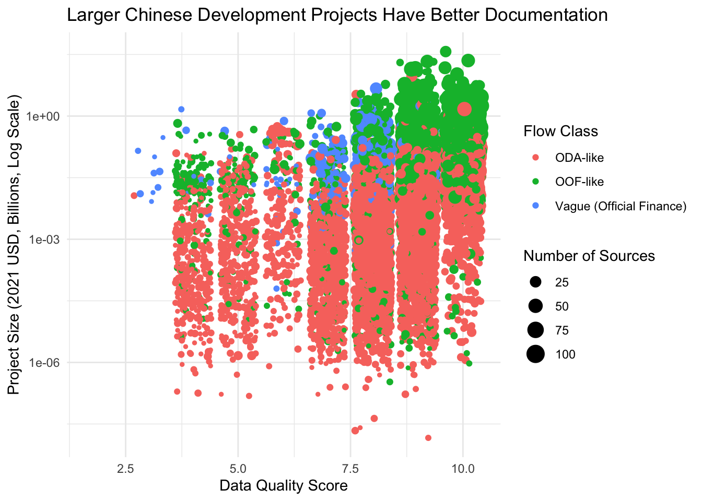
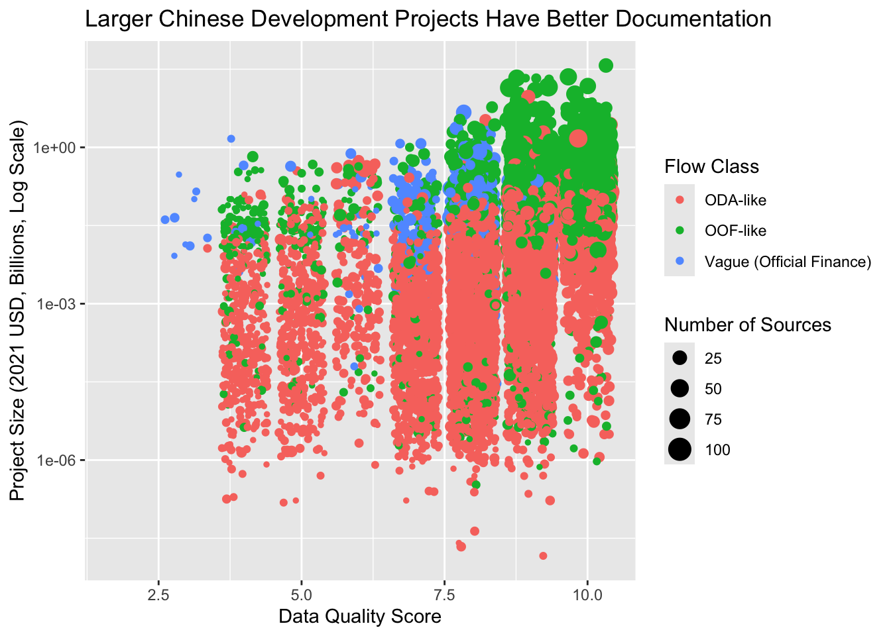

pak::pkg_install("esquisse")3 Week 2: Make Cool Charts, Right Away (Pre-Class)
This pre-class preparation should take about 45 minutes to complete.
3.1 Overview
Before we dive into code, let’s understand what we’re about to learn. {ggplot2} is an incredibly powerful data visualization tool used by data journalists at the Financial Times, The Economist, and other leading publications. With it, you can create virtually any visualization you can imagine - from simple scatter plots to complex, publication-ready graphics. And it’s completely free.
While it takes practice to create professional-level visualizations, the basics are surprisingly accessible. The secret lies in understanding ggplot2’s underlying system: the Grammar of Graphics. Just as you can create endless sentences from basic grammar rules, you can create endless visualizations by combining basic graphical elements.
Today, we’ll start by building this intuition. Instead of getting bogged down in syntax, we’ll use a point-and-click interface called Esquisse to create increasingly sophisticated visualizations. As we do this, we’ll examine the code it generates to understand how ggplot2 builds plots layer by layer.
3.1.1 Video Lecture
Watch this video lecture before our interactive session:
3.2 Learning Objectives
By completing this pre-class work, you will:
- Learn to create visualizations using Esquisse’s point-and-click interface
- Understand how ggplot2 builds plots by layering:
- Data
- Geometric shapes (points, lines, bars)
- Visual mappings (color, size, position)
- Scales
- Labels and themes
- Know where to find help and resources for continued learning
Using AI to Learn ggplot2
Large Language Models (LLMs) like ChatGPT and Claude are excellent learning companions for ggplot2. You can:
Get Code Explanations:
# Ask: "Can you explain what each line of this code does?" ggplot(data) + aes(x = year, y = amount) + geom_point()Understand Concepts:
- “Why do we use + instead of |> in ggplot2?”
- “What’s the difference between color and fill?”
- “When should I use geom_bar() vs geom_col()?”
- Get Visualization Suggestions:
- “I want to show the distribution of project sizes by region. What’s the best way to visualize this?”
- “How can I make this plot more readable?”
- Debug Issues:
- Share your code and error messages
- Ask for suggestions to improve your plots
3.3 Setup
Let’s get our workspace ready. First, create a new Quarto file to use as your lab notebook:
- In RStudio, click File → New File → Quarto Document
- Save it as
week_2_visualization_preclass.qmdin yourweek_2/Rfolder
Next, we’ll install Esquisse, a tool that will help us learn ggplot2 visually:
Now load the packages we’ll need:
library(tidyverse) # Core data science tools, including ggplot2── Attaching core tidyverse packages ──────────────────────── tidyverse 2.0.0 ──
✔ dplyr 1.1.4 ✔ readr 2.1.5
✔ forcats 1.0.0 ✔ stringr 1.5.1
✔ ggplot2 3.5.1 ✔ tibble 3.2.1
✔ lubridate 1.9.4 ✔ tidyr 1.3.1
✔ purrr 1.0.2
── Conflicts ────────────────────────────────────────── tidyverse_conflicts() ──
✖ dplyr::filter() masks stats::filter()
✖ dplyr::lag() masks stats::lag()
ℹ Use the conflicted package (<http://conflicted.r-lib.org/>) to force all conflicts to become errorslibrary(chinadevfin3) # GCDF 3.0 data
library(esquisse) # ggplot2 point-and-click interface3.4 Create An Initial Dataset
Before we start visualizing, let’s prepare some interesting data to work with. The code below creates a dataset that combines project sizes, data quality scores, and other features that might help us understand patterns in Chinese development finance.
Don’t worry if the data preparation code looks complex - in Week 3, you’ll learn how to transform data like this. For now, just run the code:
# Helper function from Week 1
to_billions <- function(amount) {
amount / 10^9
}
# Create dataset for exploring project characteristics
gcdf_project_features <- get_gcdf3_dataset() |>
filter(
recommended_for_aggregates == "Yes",
!is.na(source_quality_score),
!is.na(data_completeness_score)
) |>
mutate(
total_amount_bn = to_billions(amount_constant_usd_2021),
data_quality = source_quality_score + data_completeness_score
) |>
select(
total_amount_bn,
data_quality,
flow_class,
commitment_year,
total_source_count
)
gcdf_project_features# A tibble: 17,957 × 5
total_amount_bn data_quality flow_class commitment_year total_source_count
<dbl> <dbl> <chr> <int> <int>
1 0.00711 8 ODA-like 2021 7
2 0.0126 8 ODA-like 2021 9
3 0.0144 7 ODA-like 2021 2
4 0.013 9 ODA-like 2021 11
5 0.0075 9 ODA-like 2021 5
6 NA 6 ODA-like 2021 1
7 0.0036 7 ODA-like 2021 10
8 NA 6 ODA-like 2021 1
9 NA 6 ODA-like 2021 2
10 NA 6 ODA-like 2021 1
# ℹ 17,947 more rows
Tip
Curious what this code does? Paste it into ChatGPT or Claude and ask them to explain it step by step. Understanding data preparation will be important later, but for now, let’s focus on visualization!
3.5 Building Your First Visualization
Let’s start by exploring some interesting relationships in Chinese development finance data. Does project size relate to data quality? Do different types of flows show different patterns? We’ll build a visualization step by step to find out.
3.5.1 Step 1: Basic Scatter Plot
- In RStudio, click Addins → ggplot2 builder (Esquisse)
- When prompted, select
gcdf_project_featuresas your dataset

- Let’s create a basic scatter plot to start exploring relationships:
- Drag
data_qualityto x-axis - Drag
total_amount_bnto y-axis - Click “Point” as the chart type in the top left

- At the bottom of the Esquisse window, click “Code” to see what ggplot2 code creates this plot
Copy and run this code in your Quarto document:
ggplot(gcdf_project_features) +
aes(x = data_quality, y = total_amount_bn) +
geom_point(colour = "#112446") +
theme_minimal()Warning: Removed 7286 rows containing missing values or values outside the scale range
(`geom_point()`).
You’ve just created your first ggplot2 visualization! While simple, this already shows us something interesting: there seems to be a relationship between project size and data quality. Let’s make this visualization more informative by adding more dimensions to our data.
About Those Warnings
You’ll see warnings like this:
Warning: Removed 7286 rows containing missing values or values outside the scale range (`geom_point()`).Don’t worry! This just means some projects had missing data or values that couldn’t be plotted. This is normal when working with real-world data, especially financial data where we often have incomplete information.
If you want to hide these warnings in your documents, add this to the top of your code chunk:
#| warning: falseFor example:
```{r}
#| warning: false
ggplot(gcdf_project_features) +
aes(x = data_quality, y = total_amount_bn) +
geom_point()
```3.5.2 Step 2: Add Color by Flow Class
A Smoother Workflow
Now that you understand how to use Esquisse, stay in the Esquisse window as we add features. Each time we enhance our plot: 1. Make the change in Esquisse 2. Look at the code it generates (using the Code button) 3. Compare it to our code examples & outputs below
This way you can experiment freely without having to restart Esquisse for each change. All the code is in this document for when you want to recreate these visualizations later.
In Esquisse, drag flow_class to the color box. When you do this, notice how the code changes:
#|warning: false
ggplot(gcdf_project_features) +
aes(
x = data_quality,
y = total_amount_bn,
colour = flow_class
) +
geom_point() +
scale_color_hue(direction = 1) +
theme_minimal()Warning: Removed 7286 rows containing missing values or values outside the scale range
(`geom_point()`).Notice how color = flow_class was added inside aes(). In ggplot2, aes() is where we map data variables to visual properties. Now our plot reveals not just the relationship between project size and data quality, but also shows how different types of flows (ODA-like, OOF-like, etc.) might have different patterns.
3.5.3 Step 3: Size by Source Count
Let’s add another dimension by varying point sizes. In Esquisse, drag total_source_count to the size box. The code will now look like this:
#|warning: false
ggplot(gcdf_project_features) +
aes(
x = data_quality,
y = total_amount_bn,
colour = flow_class,
size = total_source_count
) +
geom_point() +
scale_color_hue(direction = 1) +
theme_minimal()Warning: Removed 7286 rows containing missing values or values outside the scale range
(`geom_point()`).
Our visualization now shows several relationships simultaneously: - Data quality (x-axis) - Project size (y-axis) - Number of sources (point size) - Flow class (color)
Look at how larger dots tend to appear toward the right side of the plot. This suggests that projects with more sources tend to have better documentation. That makes sense.
3.5.4 Step 4: Dealing with Overlapping Points
You might notice that many points overlap, especially at certain data quality scores. This happens because our data quality scores are whole numbers (0-10), so many projects have exactly the same score.
In Esquisse, look at the different geometry options on the left. Instead of the regular point plot, try the “jitter” option. This adds small random offsets to each point, making overlapping points visible. Here’s the code it generates:
#|warning: false
ggplot(gcdf_project_features) +
aes(
x = data_quality,
y = total_amount_bn,
colour = flow_class,
size = total_source_count
) +
geom_jitter() +
scale_color_hue(direction = 1) +
theme_minimal()Warning: Removed 7286 rows containing missing values or values outside the scale range
(`geom_point()`).
What is jittering?
geom_jitter() adds a small amount of random noise to each point’s position. This helps us see overlapping points without changing the fundamental patterns in our data. It’s particularly useful when you have: - Whole number data (like our quality scores) - Many observations with the same values - Dense clusters of points
3.5.5 Step 5: Adding Clear Labels
Now let’s make our plot more informative for our audience. In Esquisse’s “Labels & Title” tab, add these labels: - Title: “Larger Chinese Development Projects Have Better Documentation” - X-axis: “Data Quality Score” - Y-axis: “Project Size (2021 USD, Billions)” - Color legend: “Flow Class” - Size legend: “Number of Sources”
The code will now include proper labels:
#|warning: false
ggplot(gcdf_project_features) +
aes(
x = data_quality,
y = total_amount_bn,
colour = flow_class,
size = total_source_count
) +
geom_jitter() +
scale_color_hue(direction = 1) +
labs(
x = "Data Quality Score",
y = "Project Size (2021 USD, Billions)",
title = "Larger Chinese Development Projects Have Better Documentation",
color = "Flow Class",
size = "Number of Sources"
) +
theme_minimal()Warning: Removed 7286 rows containing missing values or values outside the scale range
(`geom_point()`).3.5.6 Step 6: Making Project Sizes More Visible
Our plot still has a challenge: the huge range in project sizes (from millions to billions) makes it hard to see patterns. Small projects cluster at the bottom while large projects stretch the y-axis. This is a common issue when values span several orders of magnitude.
We can fix this using a logarithmic scale. In Esquisse’s “Axes” tab, look for the y-axis options and select “log10”. Here’s what the code looks like:
#|warning: false
ggplot(gcdf_project_features) +
aes(
x = data_quality,
y = total_amount_bn,
colour = flow_class,
size = total_source_count
) +
geom_jitter() +
scale_color_hue(direction = 1) +
scale_y_continuous(trans = "log10") +
labs(
x = "Data Quality Score",
y = "Project Size (2021 USD, Billions, Log Scale)",
title = "Larger Chinese Development Projects Have Better Documentation",
color = "Flow Class",
size = "Number of Sources"
) +
theme_minimal()Warning: Removed 7286 rows containing missing values or values outside the scale range
(`geom_point()`).
Why Use Log Scales?
Log scales are perfect for data that spans several orders of magnitude. They help us see patterns across both small and large values. In Chinese lending, where projects can range from $1 million to $10 billion, log scales are essential for clear visualization.
Notice how the pattern is much clearer now: larger projects (higher on the y-axis) tend to have higher data quality scores (further right), regardless of flow class.
3.5.7 Step 7: Changing the Look
Finally, let’s try a different theme. In Esquisse’s Theme tab, switch from “minimal” to “gray”. This will give us a slightly different look:
#|warning: false
ggplot(gcdf_project_features) +
aes(
x = data_quality,
y = total_amount_bn,
colour = flow_class,
size = total_source_count
) +
geom_jitter() +
scale_color_hue(direction = 1) +
scale_y_continuous(trans = "log10") +
labs(
x = "Data Quality Score",
y = "Project Size (2021 USD, Billions, Log Scale)",
title = "Larger Chinese Development Projects Have Better Documentation",
color = "Flow Class",
size = "Number of Sources"
) +
theme_gray()Warning: Removed 7286 rows containing missing values or values outside the scale range
(`geom_point()`).
3.6 Understanding the Grammar of Graphics
What we’ve just created illustrates a powerful idea in data visualization: the Grammar of Graphics. Just as English grammar gives us rules for combining words into meaningful sentences, the Grammar of Graphics gives us rules for combining visual elements into meaningful plots.
Let’s break down our final visualization to understand each component:
#|warning: false
ggplot(gcdf_project_features) + # 1. Start with data
aes( # 2. Map data to visuals
x = data_quality, # - x position
y = total_amount_bn, # - y position
colour = flow_class, # - color
size = total_source_count # - size
) +
geom_jitter() + # 3. Choose how to display
scale_color_hue(direction = 1) + # 4. Adjust scales
scale_y_continuous(trans = "log10") + # - log scale for y
labs( # 5. Add labels
x = "Data Quality Score",
y = "Project Size (2021 USD, Billions)",
title = "Larger Chinese Development Projects Have Better Documentation",
color = "Flow Class",
size = "Number of Sources"
) +
theme_gray() # 6. Choose overall lookWarning: Removed 7286 rows containing missing values or values outside the scale range
(`geom_point()`).
Think of each component as answering a specific question:
- Data: What are we visualizing?
ggplot(gcdf_project_features)- Like choosing your ingredients before cooking
- Aesthetics: How should data map to visual properties?
aes(x = ..., y = ..., colour = ..., size = ...)- Like assigning roles to your ingredients
- Geometries: What shapes should represent our data?
geom_jitter()- Like choosing how to prepare your ingredients
- Scales: How should values convert to visual properties?
scale_y_continuous(trans = "log10")- Like adjusting cooking temperature and time
- Labels: How do we explain what we’re showing?
labs(title = ..., x = ..., y = ...)- Like writing the recipe name and instructions
- Theme: What should the overall look be?
theme_gray()- Like choosing the serving dish and presentation
Understanding this grammar is powerful because:
- You can create any visualization by combining these elements
- Changes are as simple as modifying one component
- The same principles work for any type of plot
Why Does ggplot2 Use + Instead of |>?
You might wonder why ggplot2 uses + to combine elements instead of the pipe operator (|>) we use elsewhere. This reflects R’s evolution as a living language:
- ggplot2 was created in 2005, long before the pipe operator existed
- The
+operator was chosen because plots are built by adding layers - By the time the pipe became popular, too much code already used
+ - Changing it would break thousands of existing scripts
This is a great example of how programming languages evolve while maintaining backwards compatibility.
3.7 The Tip of the Iceberg
Understanding this grammar gives you access to ggplot2’s full power. Let’s look at some common visualization needs in Chinese development finance analysis. First, we’ll prepare some useful datasets:
# Annual flow data
gcdf_annual_flows <- get_gcdf3_dataset() |>
filter(recommended_for_aggregates == "Yes") |>
group_by(commitment_year, flow_class) |>
summarize(
total_amount_bn = sum(amount_constant_usd_2021, na.rm = TRUE) |>
to_billions(),
.groups = "drop"
)
# Add cumulative amounts
gcdf_annual_flows <- gcdf_annual_flows |>
group_by(flow_class) |>
mutate(
cumulative_amount_bn = cumsum(total_amount_bn)
) |>
ungroup()
# Project-level data
gcdf_projects <- get_gcdf3_dataset() |>
filter(recommended_for_aggregates == "Yes") |>
mutate(
amount_constant_usd_2021_bn = to_billions(amount_constant_usd_2021)
)Now let’s see different ways to visualize this data using the grammar we’ve learned.
3.7.1 Chart Types and Their Geometries
Think of geometries (geom_*) as different ways to draw your data. Here are some you’ll commonly use at AidData:
Time Series (showing lending trends):
# Stacked bar chart of annual lending by flow class
ggplot(gcdf_annual_flows) +
aes(x = commitment_year,
y = total_amount_bn,
fill = flow_class) +
geom_col() +
labs(
title = "Chinese Development Finance Over Time",
x = "Year",
y = "Amount (2021 USD, Billions)",
fill = "Flow Class"
) +
theme_gray()# Line plot showing cumulative amounts
ggplot(gcdf_annual_flows) +
aes(x = commitment_year,
y = cumulative_amount_bn,
color = flow_class) +
geom_line(linewidth = 1) +
labs(
title = "Cumulative Chinese Development Finance",
x = "Year",
y = "Cumulative Amount (2021 USD, Billions)",
color = "Flow Class"
) +
theme_gray()Distributions (understanding project size patterns):
# Histogram of project sizes
ggplot(gcdf_projects) +
aes(x = amount_constant_usd_2021_bn) +
geom_histogram(bins = 50) +
scale_x_log10() +
labs(
title = "Distribution of Chinese Development Finance Project Sizes",
x = "Project Size (2021 USD, Billions, Log Scale)",
y = "Number of Projects"
) +
theme_gray()Warning: Removed 7286 rows containing non-finite outside the scale range
(`stat_bin()`).# Box plots comparing flow types
ggplot(gcdf_projects) +
aes(x = flow_class, y = amount_constant_usd_2021_bn) +
geom_boxplot() +
scale_y_log10() +
labs(
title = "Project Sizes by Flow Class",
x = "Flow Class",
y = "Project Size (2021 USD, Billions, Log Scale)"
) +
theme_gray() +
theme(axis.text.x = element_text(angle = 45, hjust = 1))Warning: Removed 7286 rows containing non-finite outside the scale range
(`stat_boxplot()`).
Which Chart When?
For time series: - Use geom_col() to show yearly totals - Use geom_line() to show trends or cumulative values
For distributions: - Use geom_histogram() to see overall patterns - Use geom_boxplot() to compare across categories - Remember to consider log scales for financial data!
3.7.2 Making Adjustments with Scales
Scales control how your data translates to visual properties. For Chinese development finance data, here are some essential scale adjustments:
# Better handling of wide-ranging financial values
ggplot(gcdf_projects) +
aes(x = commitment_year, y = amount_constant_usd_2021_bn) +
geom_point(alpha = 0.5) +
scale_y_continuous(
trans = "log10",
labels = scales::label_number(prefix = "$", suffix = "B")
) +
labs(
title = "Project Sizes Over Time",
y = "Amount (2021 USD, Log Scale)"
) +
theme_gray()Warning: Removed 7286 rows containing missing values or values outside the scale range
(`geom_point()`).# Color-blind friendly palettes for flow types
ggplot(gcdf_annual_flows) +
aes(x = commitment_year,
y = total_amount_bn,
fill = flow_class) +
geom_col() +
scale_fill_brewer(palette = "Set2") + # Color-blind friendly
labs(title = "Using Color Brewer Palettes") +
theme_gray()
Common Scale Adjustments
- Use
scale_y_log10()for financial amounts of multiple orders of magnitude - Use
scale_fill_brewer()orscale_color_brewer()for categorical variables - Use
scale_*_continuous(limits = ...)to focus on specific ranges
3.7.3 Setting the Look with Themes
Themes control the overall appearance. Different contexts need different looks:
First, we’ll install {ggthemes}, a ggplot2 extension package, which provides extra themes.
# First, install ggthemes
pak::pkg_install("ggthemes")# Load ggthemes
library(ggthemes)
# Create a base plot to try different themes
base_plot <- ggplot(gcdf_annual_flows) +
aes(x = commitment_year,
y = total_amount_bn,
fill = flow_class) +
geom_col() +
labs(
title = "Chinese Development Finance Over Time",
subtitle = "Annual Commitments by Flow Class",
x = "Year",
y = "Amount (2021 USD, Billions)"
)
# Like The Economist magazine
base_plot +
theme_economist() +
scale_fill_economist() +
theme(
axis.text.x = element_text(angle = 45, hjust = 1)
)# Like the Wall Street Journal
base_plot +
theme_wsj() +
scale_fill_wsj() +
theme(
axis.text.x = element_text(angle = 45, hjust = 1)
)These publication themes aren’t just for fun - they demonstrate how consistent visual styling helps build a publication’s brand. The Economist’s clean, professional look and the Wall Street Journal’s distinctive style are instantly recognizable to readers.
Think about how this can apply to AidData.
Professional Publication Themes
The {ggthemes} package lets you mimic the style of major publications. While we might not use these for academic work, they’re: - Fun to play with - Great for presentations - Show how flexible ggplot2 can be - Demonstrate the power of consistent visual styling
Choosing Themes
- Use
theme_gray()(default) for exploration - Use
theme_minimal()for presentations - Use
theme_classic()ortheme_bw()for publications - Remember you can customize any theme with
theme()
3.8 Resources for Learning More
Now that you’ve seen the power of ggplot2, here are the key resources to help you keep learning:
3.8.1 Essential References
- ggplot2 cheatsheet
- Two-page visual reference of ggplot2’s most useful features
- Keep this open while you work!
- Print it and put it on your wall
- Official Documentation
- Getting Started with ggplot2: Clear introduction to core concepts
- Complete Function Reference: When you need details about specific functions
3.8.2 Learning Resources
- Data Visualization chapter in R for Data Science
- Comprehensive introduction
- Lots of examples
- Free online!
- Video Tutorials
- Beautiful Charts with R & ggplot2 by Albert Rapp
- Perfect for learning by watching
- Shows step-by-step process
Learning Strategy
- Start simple - get something on the screen
- Add complexity one layer at a time
- Use the cheatsheet to discover new features
- Look up details in the documentation when needed
- Use AI tools (like ChatGPT or Claude) to:
- Explain code you don’t understand
- Suggest improvements
- Help debug issues
3.9 Next Steps
In our class session, we’ll:
- Review any questions about the grammar of graphics
- Practice creating publication-ready visualizations
- Work with your own Chinese development finance questions
- Learn some advanced ggplot2 features
Remember: The goal isn’t to memorize every option, but to understand the general approach to building visualizations layer by layer. With the grammar of graphics as your foundation, you can create any visualization you need!